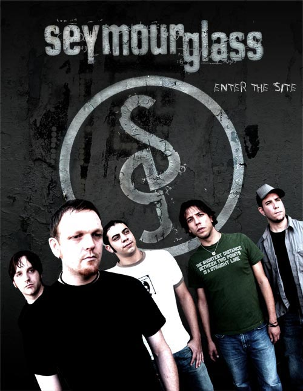

Five male band members stand in a staggered line and pose in front of a weathered dark concrete wall painted with a large circular S emblem. The band name seymourglass appears in distressed white type across the top and the words ENTER THE SITE appear hand written to the right. Lighting is high contrast and moody, creating a gritty edgy atmosphere.